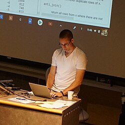

Jeffrey T. Leek | |
|---|---|
 Jeffrey Leek in 2017 | |
| Education | Utah State University (B.S.) University of Washington (Ph.D., M.S.) |
| Known for | Biostatistics and Data Science |
| Awards | COPSS Presidents' Award |
| Scientific career | |
| Fields | Biostatistics |
| Institutions | Fred Hutchinson Cancer Research Center |
| John D. Storey | |
Doctoral students | Hilary S. Parker |
Jeffrey Tullis Leek is an American biostatistician and data scientist working as a Vice President, Chief Data Officer, and Professor at Fred Hutchinson Cancer Research Center.[1][2] He is an author of the Simply Statistics blog, and runs several online courses through Coursera, as part of their Data Science Specialization.[3][4] His most popular course is The Data Scientist's Toolbox,[5] which he instructed along with Roger Peng and Brian Caffo. Leek is best known for his contributions to genomic data analysis and critical view of research and the accuracy of popular statistical methods.
Leek graduated from Utah State University in 2003 with his Bachelors of Science. Then went on to study at the University of Washington achieving a Master's degree in 2005 and completed a PhD in Biostatistics in 2007 with John Storey as his doctoral advisor.[2][6]
Leek joined Johns Hopkins University as an assistant professor in Biostatistics in 2009, working at the Bloomberg School of Public Health. In 2014 he became an associate professor in Biostatistics and Oncology.
Leek works in The Center for Computational Biology[7] at Johns Hopkins University creating statistical packages[8][9] for analysis of genomes.
He also co-edits a blog, Simply Statistics[10] with Roger Peng and Rafa Irizarry, which contains a mix of articles on statistics and meta-research.
Leek has conducted several talks at prestigious universities and locations such as a colloquium series at Harvard[11] and a lecture at the New York Genome Center titled “Building a Comprehensive Resource for the Study of Human Gene Expression with Machine Learning and Data Science”[12] as a part of their lecture series.
He is an expert in reproducibility, and his work and opinions have been published in notable scientific and medical journals such as Nature[13][14] and the Proceedings of the National Academy of Sciences. Leek wrote a self-published book, The Elements of Data Analytic Style and is considered an expert on replication.[15][16]
He is currently Vice President and Chief Data Officer at Fred Hutchinson Cancer Center in Seattle, where he and his team are working on AI-supported cancer treatment discovery.[17][2]
Leek was elected as a Fellow of the American Statistical Association in 2020.[18] In 2021, Leek won the COPSS Presidents' Award.[19] He was named one of the one hundred most influential people in AI in 2025 by Time Magazine.[17]
Leek's highly cited works include
.jpg){kind=link}